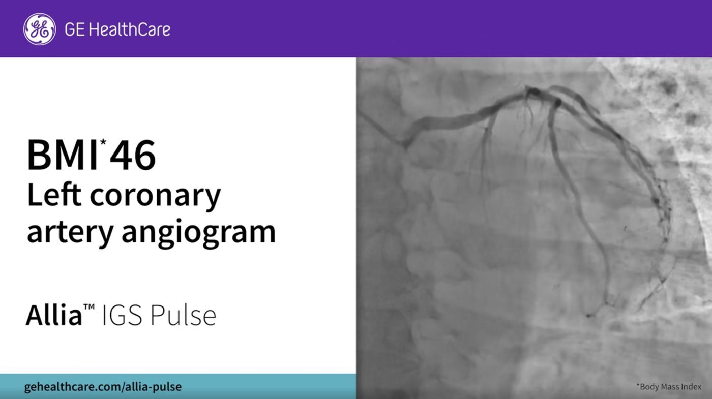
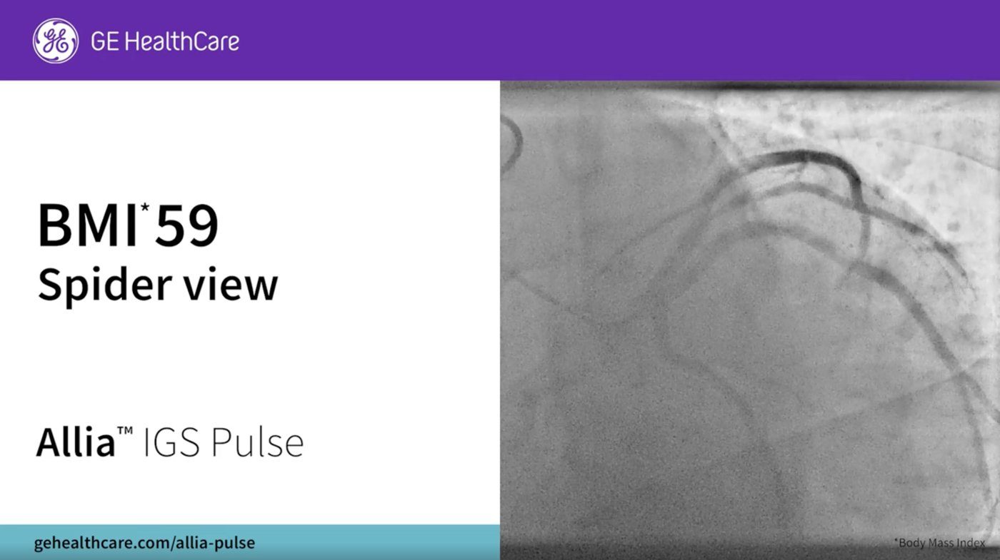
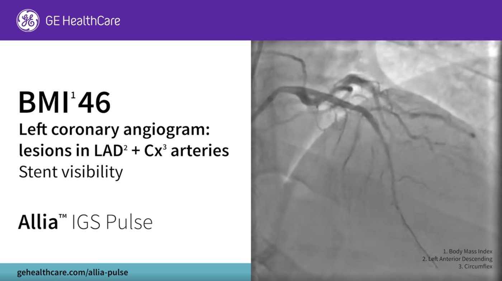

Une campagne de notoriété LinkedIn pour Allia IGS Pulse, le système d’imagerie interventionnelle de GE HealthCare. Avant d’annoncer une nouvelle fonctionnalité, l’objectif était que les cardiologues reconnaissent le problème clinique qu’elle résout : obtenir des images nettes chez les patients à IMC élevé.
01 — Le projet
Une technologie complexe, rendue claire.
ClientGE HealthCare
FormatSérie de posts LinkedIn avec vidéos d’images cliniques
AudienceCardiologues interventionnels et équipes de salle de cathétérisme
RôleMarketing & communication, rédaction
LangueAnglais
02 — Contexte
Installer le récit avant le lancement.
Chez les patients à IMC élevé, les rayons X traversent des couches de tissus plus épaisses, ce qui rend souvent les images moins nettes. Cette première phase de la campagne a installé ce problème dans l’esprit du public, pour que l’annonce de la fonctionnalité arrive auprès d’une audience qui le reconnaissait déjà.
03 — L’approche
Un problème, plusieurs angles.
Un problème, plusieurs angles
Chacun des 13 posts explorait une facette différente : qualité d’image, dose de rayonnement, artefacts de mouvement, positionnement et durée de la procédure.
Des accroches en question
Chaque post s’ouvre sur une question que les cardiologues se posent en pratique.
Une structure claire
Le problème clinique, puis son impact sur le travail du médecin, puis la réponse du système.
Précis et conforme
Des concepts techniques en langage simple, avec chaque affirmation conforme aux réglementations de la communication médicale.
Texte et image ensemble
Chaque post était associé à une courte vidéo d’images cliniques réelles, choisie pour illustrer exactement ce que décrivait le texte.
04 — Posts choisis
Des questions cliniques, des réponses claires.
Publiés en anglais sur le LinkedIn de GE HealthCare.
Post 01
How to avoid the obstruction of key angles for large patients in interventional X-ray imaging
In case of excess fat, especially in the chest or abdomen, key angles may be hindered in X-ray imaging. It then impacts the X-ray tube rotation and results in less clear imaging of the coronary arteries and a need for repositioning or multiple projections to obtain usable images, leading to a corresponding increase of procedure time. This challenge can be addressed thanks to the small footprint of Allia IGS Pulse, meaning you can reach steeper angulations with the 30-cm detector configuration.

Post 02
Why is contrast resolution reduced for large patients in coronary angioplasty?
Patients with high BMI often have more adipose tissue between the coronary arteries and the imaging equipment, which can result in reduced contrast resolution in the angiographic images, making it harder to distinguish between the coronary vessels and surrounding tissues. Choose Allia IGS Pulse to leverage a wide range of focal spots with tube power that is large enough to minimize contrast-resolution reduction.

Post 03
How to avoid suboptimal contrast filling of vessels in large patients
Even with optimal contrast-injection conditions in patients with high BMI, the increased amount of soft tissue can cause suboptimal contrast filling in the vessels. With Allia IGS Pulse’s large peak power and reduced focal spots, spatial resolution is increased by 22%, providing clearer and more detailed images.

Post 04
Why does obesity decrease image quality in percutaneous coronary interventions?
Obesity increases the thickness of soft tissue, resulting in poor visualization of the blood vessels, wires and stents. Allia IGS Pulse enables cardiologists to visualize coronary arteries and devices clearly for all patients.
Ce que ça montre
Transformer une technologie médicale complexe en contenu clair et crédible
Construire une campagne comme un récit qui mène au lancement
Écrire avec précision pour des professionnels de santé